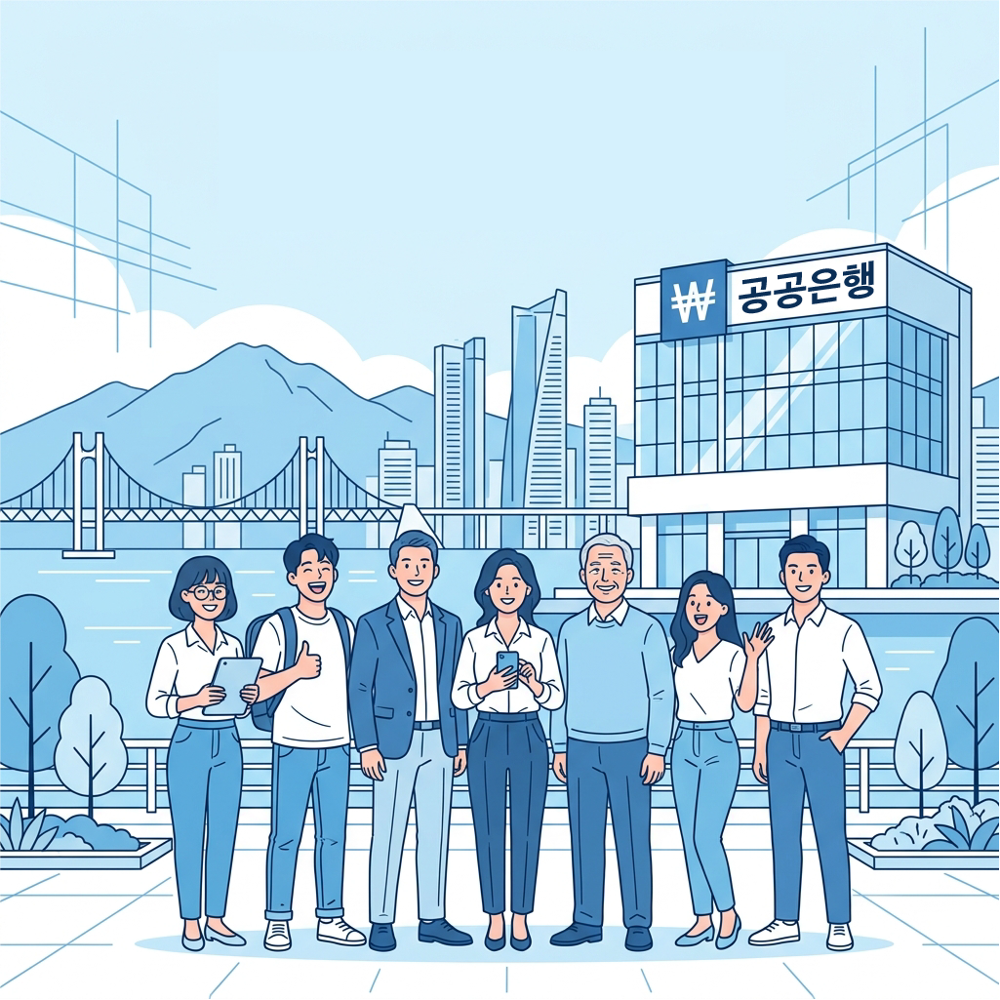
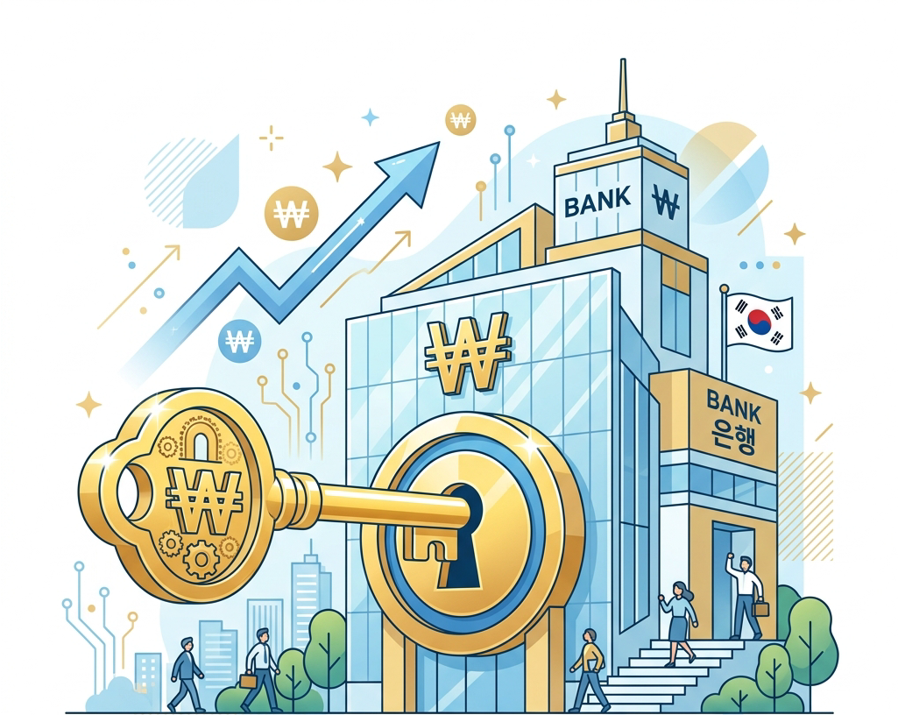

예산은 부족하지 않습니다
제대로 쓰면 됩니다
단위 : 천억 원
| 2016년 | 2026년 | 증가율 | |
|---|---|---|---|
| 대한민국 예산 | 3,864 | 7,279 | 88% |
| 부산시 예산 | 113 | 193 | 71% |
| 연제구 예산 | 2.6 | 6.1 | 134% |
일하는 사람들 실질임금은 제자리인 반면 국가예산은 10년 새 2배 늘었습니다. 공공성으로 일자리를 창출하고 경제를 살려야하는 이유입니다.
또한 AI대전환, 기후위기, 미국발 전쟁과 강탈, 외교위기로 인해 더 이상 민간에만 맡겨두는 경제구조는 불가능한 시대입니다.
부산소멸을 막을
청년일자리와 주거개선
부산시와 연제구 예산 제대로 쓰면 이룰 수 있습니다
청년들이 부산을 떠나고 싶어 떠나는 것이 아닙니다. 좋은 일자리가 없어 떠납니다.
당장 '대기업을 유치하겠다'는 구호보다 있는 일자리를 좋게 가꾸는 것이 우선입니다.
아울러 공공일자리를 대폭 확대하여 청년일자리 질이 높아지도록 사회적 기틀을 만드는 일이 우선입니다. 행정의 시선이 청년에게 향해있지 않기 때문에 방치된 일들입니다.
진보당은 부산행정의 시선이 가장 먼저 청년들을 향하도록 정책을 설계하고자 합니다.
경험과 실력을 쌓아주는
청년공공인턴 대폭확대!
청년 공공인턴의 평생일자리는 아닙니다. 하지만 단순 행정보조가 아닌 공공 부문의 요직하고 창의적인 업무를 수행하게 함으로써 경험과 실력을 쌓아 취업과 창업의 디딤돌을 높일 수 있습니다.
초년생의 든든한 빽
'연제 노동권리 119'
부산은 의사 사각지대인 5인미만 사업장 비율이 압도적으로 높습니다. 직장갑질과 부당대우를 받아도 기댈 곳이 없는 것이 현실입니다. 행정이 나서면 획기적으로 해결할 수 있는 문제입니다.
- Ⅰ. 구청장 직속 직장갑질 119 : 구청 내 신문 노무사가 상주하는 진단창구를 신설합니다. 익명 제보시스템을 통해 직장 내 괴롭힘, 임금체불, 부당해고에 대해 즉각적인 법률지원과 중재를 합니다.
- Ⅱ. 5인미만사업장 구청 전수관리 : 각 구청별로 근로기준법 사각지대에 있는 5인미만 사업장을 전수관리합니다. 노동 가이드라인을 제정하여 준수하는 사업장에 혜택을 제공합니다. 구청이 쓸 수 있는 권한을 사용하여 노동법 준수를 강제합니다.
- Ⅲ. 청년 노동자 '권리보호 바우처' : 노동법위반 사례에 대해 법적 대응이 필요한 청년들에게 소송 비용이나 상담비용을 바우처로 지급하여 돈이 없어 권리를 포기하는 일이 없도록 합니다.
전세사기제로!
행정이 나서면 가능합니다
계절별 때마다 발생한 전세사기, 행정이 나서면 해결할 수 있습니다. 구청에 '청년 주거복지 매니저'를 신설하여 계약 단계부터 악성 임대인 조회, 권리 분석까지 원스톱으로 지원합니다. 주거복지 매니저 양성을 청년을 대상으로 하여 일자리 창출로 이어집니다.
원룸타운 정주여건
획기적 개선!
원룸타운 내 노후건물을 구청이 임대하여 공유오피스, 스마트 세탁소, 커뮤니티 주방이 결합한 라운지를 곳곳에 배치합니다. 아울러 골목길 조도를 높이고 AI보안 카메라를 결합해 안전한 거리로 바꿉니다.
실질적 도움이 되는
청년 주거수당 보장!
현재 주거 지원은 2년은 청년의 현실을 반영하지 못한 탁상행정입니다. 지원기간 대폭 연장이 필요합니다. 진짜 자립할 수 있는 시간을 서울처럼 구청이 보장해야합니다.
전세보증금 반환보증료
무상지원!
전세사기를 막기 위한 반환보증보험료를 청년 일인이 부담하는 것은 정책 실패를 청년이 해결하는 것입니다. 당장 제도를 개선할 수 없다면 모든 청년 세입자를 대상으로 전세보증금 반환보증보험 가입비(보증료)를 구청이 100% 전액 지원합니다.
자영업자가 살아야 부산이 삽니다
동백배달
언제까지 배민·쿠팡의
'수수료 노예'로 살아야 합니까?
배달앱은 특별한 기술도 아닙니다. 그저 먼저 시작했다는 이유만으로 우리 동네 사장님의 땀방울과 부산시민의 소중한 돈이 매달 수천억 원씩 수도권·해외자본으로 유출되고 있습니다.
서울은 신한은행-땡겨요 민관합동 배달앱이 점유율 10% 달성 중입니다. 부산은 불안정한 민관합동 앱을 넘어 완전 공공배달앱으로 점유율 70% 기적을 향해 달릴 수 있습니다.
불가능한 일이 아니라 부산시가 무능하고 무관심할 뿐입니다.
동백배달 압승!
소비자 · 자영업자 · 라이더 상생으로 부산 경제 살리는 앱, 안 쓸 이유가 있겠습니까
*2만원 주문기준 예시
| 민간배달앱(무료배달) | 동백배달 | |
|---|---|---|
| 음식가격 | 20,000원 | 20,000원 |
| 배달비 | 2,800원(플랫폼 부담) | 3,000원(동백배달 부담) |
| 총 결제금액 | 20,000원 | 20,000원 |
무료배달
캐시백 10% 추가혜택
*2만원 주문기준 예시
| 민간배달앱(무료배달) | 동백배달 | |
|---|---|---|
| 음식가격 | 20,000원 | 20,000원 |
| 배달료 | -3,200원 | -3,000원 |
| 중개 수수료 | -1,560원(7.8%) | -400원(2.0%) |
| 결제 수수료 | -600원(3.0%) | 0원(*별도 결제 시 면제) |
| 광고/기타비 | -500원(추정) | 0원(*입찰/노출 광고비 전액 무료) |
| 최종 입금액 | 14,140원 | 16,600원 |
추가소득발생
*2만원 주문기준 예시
| 민간배달앱 | 동백배달 | |
|---|---|---|
| 건당 총비용 | 6,000원 | 6,000원 |
| 배달대행사/공공파트너 | -500원 | -500원 |
| 플랫폼사/동백배달 수익 | -1,500원 | -500원 |
| 라이더 수령액 | 4,000원(평균) | 5,000원(평균) |
추가소득발생
전국 최고수준 대우
*공공라이더 시스템 구축 : 신속·안전 배달망 구축으로 지역대표 좋은 일자리로 육성
동백배달 운영에 필요한 연간재원 (추정)
| 항목 | 내용 | 금액 |
|---|---|---|
| 배달앱 운영수익 | 중개수수료 수익(2.0%) 180억 + 플랫폼 운영비 60억 | 120억 원 |
| 배달 수익 | 배달료 수익 273억 - 라이더/파트너 지원비 182억 | 91억 원 |
| 부산은행 상생 출연금 | 신한은행-사업명 가오피엔링크 25년 시한은 538억규모 의결 및 저금리 대출 사업중 | 500억 원 |
| 부산시 보조 | 배달 투입 예산 580억 원의 10% 적금으로 | 534억 원 |
| 동백배달 운영 예산(총액) | 배달매출 3000억 원에 대한 배달비지비 / 부산 배달매출 1.8조 원(추정) 점유율 50% 기준 | 1,245억 원 |
부산시 투입 예산 534억 원은 세금낭비가 아니라
부산 경제부활의 마중물!
장차로 부산공공은행 설립으로 수익기반 완벽한 재정자립 가능
→ 진보당이 제안하는 궁극적 모델

BNK 부산은행은 부산시와 16개 구군 예산을 맡아 운용하는 시(구) 금고입니다. 막대한 돈을 맡아 유무형의 수익을 내면서도 겨우 0.x%대의 쥐꼬리 만한 이자를 줍니다.
게다가 이름만 부산은행이지 외국인 자본이 46%, 대주주는 롯데입니다. 수익은 고스란히 외국과 서울로 빠져나갑니다.
지자체가 직접 자기예산(기금포함)을 자본금으로 공공은행을 설립하면 수익은 모두 부산시민의 것이 됩니다. 아울러 부산의 돈이 서울로 빠져나가지 않고 부산안에서 돌면서 부산의 경제를 살리고 일자리를 만들어 냅니다.
이 좋은 공공은행 왜 안하냐구요?
은행법이 막고 있기 때문입니다
- 21대 국회 진보당 강성희 의원 발의 (임기 만료 폐기)
- 22대 국회 민주당 송재봉 의원 발의 (정무위원회 검토 중)
특별법으로 부산공공은행, 00구/군 공공은행을 설립해 공공성과 일자리로 부산경제를 살려야 합니다.
공공성과 일자리로
부산경제 얼마든지 살릴 수 있습니다
문제는 입니다

빨려들어가는 걸 막아야합니다
부산에서 순환하면서 부산경제를 살찌웁니다.
지방재정 긴축 불필요
(지방재정위기 최소화)
공적금융지원
- 부산시민, 소상공인, 부산중소기업 저리대출
재정부담 없는 공공정책
- 해상풍력 등 공공에너지-해양공공신산업, 공공은행, 공공배달 등 공공 정규직 청년일자리 대폭 창출
- 청년창업 무이자 대출론 지원
- 시니어 일자리 대폭확대
- 경력단절기간 여성 공공일자리 (워킹스쿨버스,상담,교육)
- 무료마을공공버스 (연제구 전지역을 역세권으로)
이윤대신 지역살리기를 목적으로
지자체가 설립한
- 100% 주정부소유로 1919년 설립
- 2008년 금융위기때 미국내 유일 흑자유지은행
- 지역정부와 지역사회 공동운영
- 독일은행시장 25%점유율
- 주정부가 1882년 설립
- 지역경제의 최후의 보루역할
- 1938년 대공황때 설립
- 캐나다 서부 최대금융기관중 하나
- 스위스 26개 주중 24개주에서 운영
- 19세기 설립하여 시장점유율 30%
- 2002년에 호주계 민간은행에 맞서 뉴질랜드 정부가 설립
- 뉴질랜드 국민의 엄청난 지지